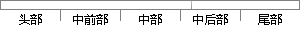

例如有一批观察数据X={x_1,x_2…
片段位置图

相似结果|
相似片段 1：假设训练样本属于类别 K ，那么单高斯模型可以表示为：1)/( ??????? xCTxKxN（4-6）（2）混合高斯模型：混合高斯模型是单一高斯概率密度函数的延伸，例如有一批观察数据
|
※ 片段修改建议 ※
近似词参考：- 例如：比方
- 如有：若有
- 观察：察看 调查 观测 考察 窥察 视察
系统自动生成语句：比方有一批察看数据X={x_1,x_2…
注：本片段修改建议为系统自动生成，仅供参考。